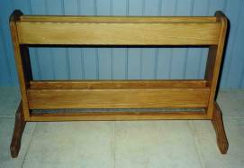

Our Shop

Camels Hump Woodworking is a small woodworking shop located in Central Vermont in the shadow of Camels Hump. Our specialty items are the "Ultimate Bread Knife" and Free standing Wooden Ski Racks. We also offer unique wood framed mirrors, fine furniture and cabinetry.
Our shop is located in a modern post and beam building at my residence. Each item we craft, reguardless of the size is hand finished with attention paid to every detail. The fine furniture is built in hopes that each piece will become a heirloom.
Ski Racks
Offered from stock are distinctive wooden ski and snowboard racks that provide an elegant way to store skis or snowboards. These racks make an excellent addition to vacation ski homes.
|  |
|
Ultimate Bread Knife
Made from Native Vermont Hardwoods and beautifully finished - avaliable in Curly Maple, Birds Eye Maple, Tiger Maple, Black Walnut, and Cherry. The Blade is from commercial bread slicing equipment and will never need sharpening. A blade cover made from the same wood species as the knife protects the blade when not in use. The guard is held in place by a magnet embedded in the guard.